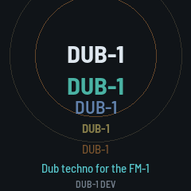
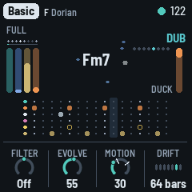
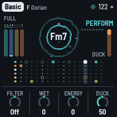

DUB-1
Dub techno for the M-VAVE FM-1
A generative dub techno machine. It plays itself from the moment it's switched on: chord stabs thrown into a tape echo, a sub bass, a steady kick, vinyl crackle, eight-bar phrases that drop the kick for a break and bring it back with a fill. Leave it running for hours, or play it: the mix and dub moves on the keys, sixteen effects on REC, your own chords and drum patterns.



What it plays
- Chord. Off-beat stabs through a resonant filter, mostly into the echo: saws, keys, two organs, a pad, a bell, noise. Its own progression if you write one, or chords moving by themselves.
- Pings. Short FM blips on four loops of unequal length, sliding against each other.
- Bass. A sub on five grooves, from a drone to a roller; FM basses with bite.
- Drums. A kick tuned to the key ducking everything else, a shaker, an off-beat hat, a rim and a rare clap thrown into the echo and the plate; your own patterns if you like.
- Space. A tape echo that can feed back past 100%, a granular cloud, a plate reverb, vinyl crackle. REC tapped holds the echo; held, sixteen effects on the keys.
Eight pieces, each remembering how you left it; a voice for each layer on ALGORITHM, two more pages of sound under each layer's button, an FM page with the algorithm drawn. The screen shows the echo: each stab a ring, its repeats following.
Or play it live: a DJ filter on the main page; PERFORM (SEL) mutes and solos the layers on the keys, throws, opens, shuts and drops the floor, and turns the knobs into four master actions, Filter, Dub, Energy and Space.
To go back to the official firmware, use the installer's "Back to the stock firmware", or M-VAVE's updater, M-UPGRADE, from m-vave.com/download. DUB-1 is a fork of AMB-1 by Charles Vestal; its granular cloud follows JIANT's; the platform is Felucca by Leo Kuroshita (Hügelton Instruments). GPL-3.0. M-VAVE and FM-1 are trademarks of their owners. DUB-1 is not affiliated with M-VAVE or Hügelton Instruments.